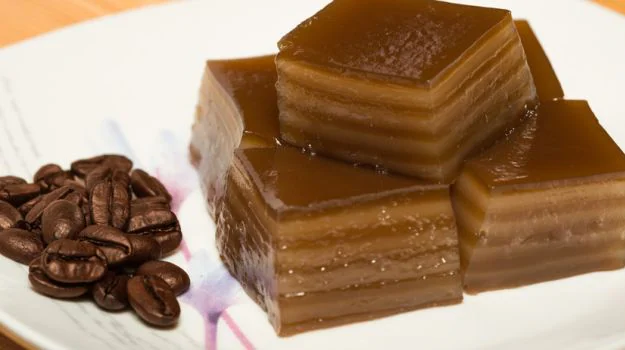
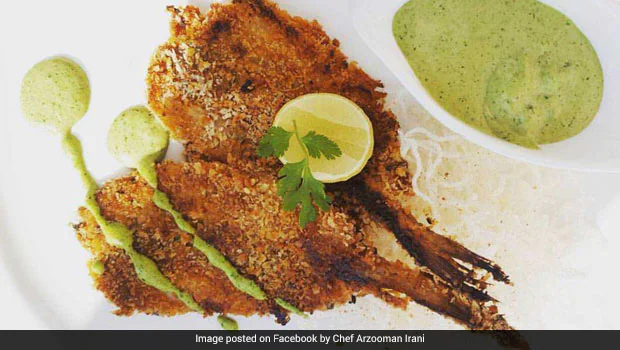
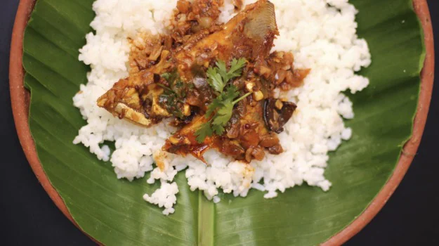
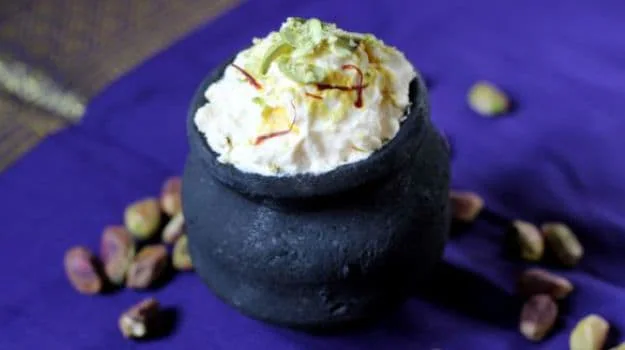
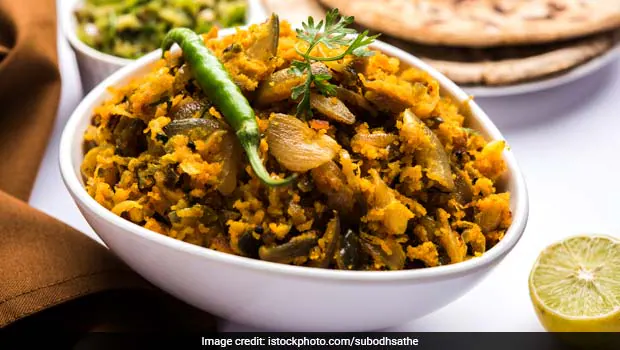

Bebinca is a rich and indulgent layered dessert from Goa, known for its unique texture and buttery flavor. Made primarily with coconut milk, sugar, ghee, eggs, and flour, Bebinca is baked in thin layers, one at a time, creating a beautiful multi-layered cake-like sweet. Each layer is cooked until golden before adding the next, giving it a delicate caramelized taste and a soft, melt-in-the-mouth texture.

Bombay Duck, despite its misleading name, is not a duck but a type of fish found along the western coast of India, particularly in Maharashtra and Gujarat. Known locally as Bummalo, this fish is slender, delicate, and has a unique, slightly tangy flavor that makes it highly prized in coastal cuisine. Traditionally, it is cleaned, salted, and sun-dried, giving it a distinctive aroma and a concentrated taste.

Dhokla is a soft, spongy, and savory snack that hails from Gujarat in Western India. Made from a fermented batter of gram flour (besan) and yogurt, Dhokla is steamed to perfection, giving it a light, airy texture that practically melts in the mouth. It is often tempered with mustard seeds, green chilies, and curry leaves, and garnished with fresh coriander and grated coconut, enhancing both flavor and aroma.

Goan Fish Curry is a signature coastal dish from Goa, known for its tangy, spicy, and aromatic flavors. Fresh fish, often kingfish or pomfret, is cooked in a luscious gravy made from coconut milk, tamarind, garlic, and a blend of Goan spices such as coriander, turmeric, and red chili powder. The curry achieves a perfect balance of heat, tanginess, and creaminess, making it a delight for seafood lovers.

Laas Maas is a traditional Rajasthani mutton curry that is cherished for its rich, spicy, and intensely flavorful profile. Prepared using tender pieces of mutton simmered in a blend of yogurt, garlic, ginger, and a mix of aromatic Rajasthani spices, Laas Maas is known for its deep red, fiery gravy. The use of minimal water and slow cooking over low heat allows the flavors to concentrate, creating a hearty and satisfying dish.

Shrikhand is a traditional sweet dish from Maharashtra and Gujarat, celebrated for its creamy texture and delicate flavors. Made by straining yogurt to remove the whey, it becomes thick and rich, almost like a soft cheese. This thickened yogurt is then sweetened and flavored with cardamom, saffron, and sometimes rose water or fruit purees like mango, giving it a refreshing and aromatic taste.

Vada Pav is an iconic street food from Mumbai, Maharashtra, often called the Indian version of a burger. It consists of a spicy potato fritter (vada) sandwiched between a soft bun (pav), usually accompanied by tangy and sweet chutneys, and sometimes fried green chilies for an extra kick. The vada is made from mashed potatoes mixed with spices, coated in gram flour batter, and deep-fried to a golden crisp.

Zunka Bhakri is a traditional Maharashtrian meal that is both hearty and nutritious. Zunka is a spicy, flavorful dish made from gram flour (besan), onions, green chilies, and a blend of aromatic spices, sautéed until golden and fragrant. It is usually served with bhakri, a round flatbread made from jowar (sorghum) or bajra (pearl millet) flour, which adds a rustic and wholesome touch to the meal.